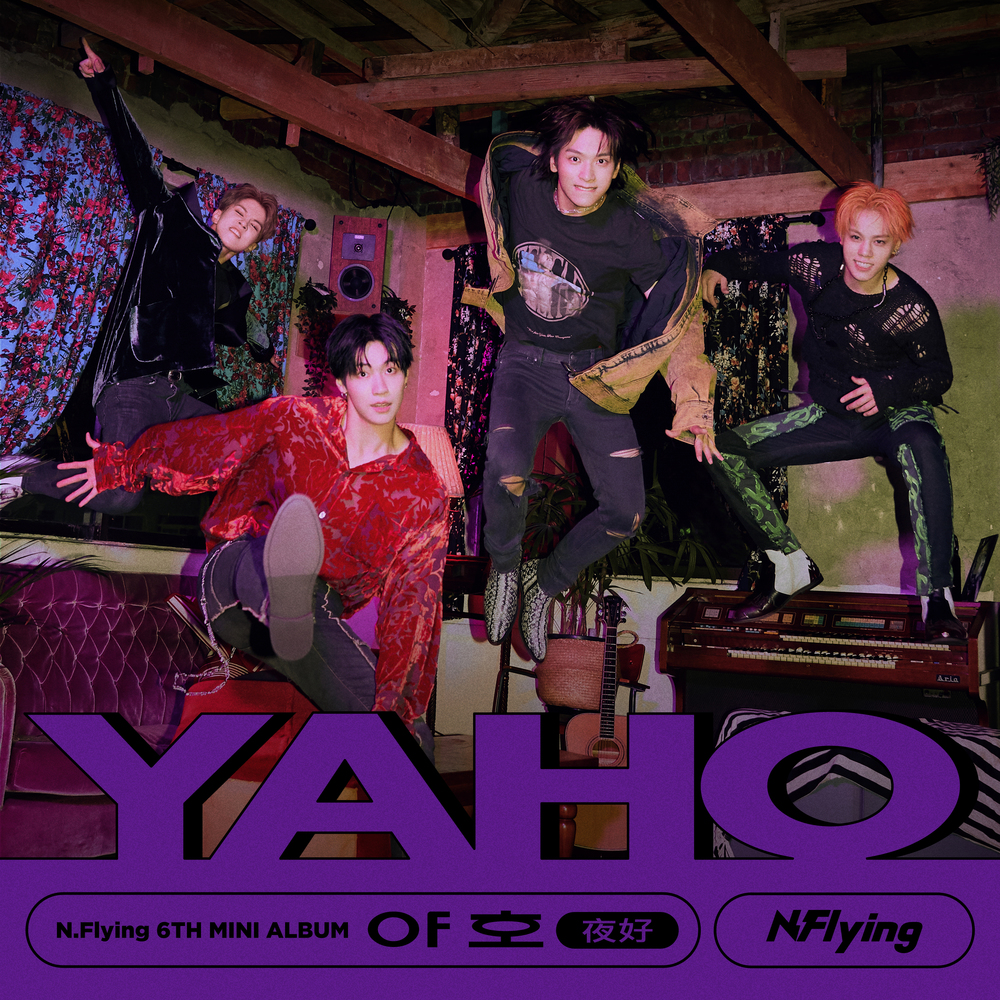

Autumn Dream
엔플라잉 (N.flying)

낯익은 넌 내가 봤던 그때 네가 맞는지
일어날 수도 없는 일을 뒤적이는데
미안해 늦게 찾아온 널 잡기도 전에
깨어난 내 이불 속은 여전히 차갑게
달빛 아래 난 또 그 길을 잃고
초라한 거리도 너와는 다 괜찮았는데
난 지금 떠나지만 안개 낀 널 따라서
푸르른 숲이 보일 때 널 찾아갈 텐데
I'm waiting for
내 맘엔 비가 내리고 있어
얼마나 갈진 나도 잘 모르겠어
온실 속 화분처럼
난 외롭고 빛을 받을 널 waiting for
우린 너무 아름답고 때론 비극적인 꿈
그 어떤 말로도 표현할 수가 없어서
눈 감아야 네게 닿을 수 있을까
널 어둠 속에서 내버려 두기 싫은데
기억의 방 안에 갇혀 있는 날
Knocking on the door 날 떠올려 줘
Is this you
낯익은 넌 내가 봤던 그때 네가 맞는지
일어날 수도 없는 일을 뒤적일 텐데
미안해 늦게 찾아온 널 잡기도 전에
깨어난 내 이불 속은 여전히 차갑네
I'm waiting for
널 잃었던 날도 널 잊었던 마음도
꿈인 줄 알았는데
네게 닿은 감촉 그 뒤에 나를 감춰
도망치려 하는데
걱정 마 내 모든 검정들을 버려서
다시 눈 감으면 날 찾아와서 깨워줘
눈 감아야 네게 닿을 수 있을까
널 어둠 속에서 내버려 두기 싫은데
기억의 방 안에 갇혀 있는 날
Knocking on the door 날 떠올려 줘
Is this you
낯익은 넌 내가 봤던 그때 네가 맞는지
일어날 수도 없는 일을 뒤적일 텐데
미안해 늦게 찾아온 널 잡기도 전에
깨어난 내 이불 속은 여전히 차갑네
하루의 끝에서 널 기다려 서 있어
내 모든 검정을 버려서
다시 눈 감으면 날 찾아와서 깨워줘
너무 기다렸다고 너도 내게 말해줘
이 모든 검정을 끝내고
Knocking on the door 날 떠올려 줘
Is this you
낯익은 넌 내가 봤던 그때 네가 맞는지
일어날 수도 없는 일을 뒤적일 텐데
미안해 늦게 찾아온 널 잡기도 전에
깨어난 내 이불 속은 여전히 차갑네
낯익은 넌 몇 번이고 나를 두드리면서
일어날 수도 없는 일을 함께해줘서
고마워
0:00